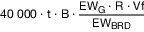

| Lfd. Nr. | Gebührentatbestand | Gebühr in Euro | ||
|---|---|---|---|---|
| A | Allgemeine Gebühren | |||
| A.1 | Erstellen einer zusätzlichen Ausfertigung eines Frequenzzuteilungsbescheids in nicht-elektronischer Form | 25 | ||
| A.2 | Änderung einer Zuteilung von Frequenzen, wobei die Änderung nicht die auf den Verwendungszweck der Frequenz abgestellten Parameter betrifft (insbesondere weder Frequenzänderung noch Verlängerung der Zuteilung) | 25 | ||
| A.3 | Zurücknahme eines Antrags nach dem Beginn der sachlichen Bearbeitung und vor Beendigung der individuell zurechenbaren öffentlichen Leistung | bis zur Höhe von 75 % des entsprechenden Gebührentatbestands nach Abschnitt B, begrenzt bis zur Laufzeit von drei Monaten | ||
| A.4 | Ablehnung eines Antrags aus anderen Gründen als dem der Unzuständigkeit | bis zur Höhe des entsprechenden Gebührentatbestands nach Abschnitt B, begrenzt bis zur Laufzeit von drei Monaten | ||
| A.5 | Entscheidung über einen Änderungsantrag aufgrund eines Übergangs von Frequenznutzungsrechten nach § 55 Absatz 8 des Telekommunikationsgesetzes | nach Zeitaufwand | ||
| A.6 | Rücknahme oder Widerruf einer Zuteilung, sofern der Zuteilungsinhaber dies zu vertreten hat | nach Zeitaufwand, bis zur Höhe des entsprechenden Gebührentatbestands nach Abschnitt B | ||
| B | Gebühren für die Zuteilung von Frequenzen | Die Höhe der Gebühr wird nach der angegebenen Formel bestimmt. Hierbei sind: | ||
| B = Zugeteilte Bandbreite in MHz | ||||
| t = Laufzeit der Zuteilung in Jahren. Soweit die Laufzeit der Zuteilung nicht in vollen Jahren bestimmt ist, wird für jeden angefangenen Monat eine Gebühr in Höhe eines Zwölftels einer Jahresgebühr erhoben. | ||||
| B.0 | Drahtloser Netzzugang zum Angebot von Telekommunikationsdiensten | |||
| B.0.1 | Zuteilung von Frequenzen zur bundesweiten Nutzung für den drahtlosen Netzzugang in den Frequenzbereichen 451 MHz bis 455,74 MHz und 461 MHz bis 465,74 MHz je Frequenz (einschließlich der Festsetzung funktechnischer Parameter) | 600 000 · t · B | ||
| B.0.2 | Zuteilung von Frequenzen zur bundesweiten Nutzung für den drahtlosen Netzzugang im Frequenzbereich 703 MHz bis 788 MHz je Frequenz (einschließlich der Festsetzung funktechnischer Parameter) | 950 000 · t · B | ||
| B.0.3 | Zuteilung von Frequenzen zur bundesweiten Nutzung für den drahtlosen Netzzugang im Frequenzbereich 791 MHz bis 862 MHz je Frequenz (einschließlich der Festsetzung funktechnischer Parameter) | 860 000 · t · B | ||
| B.0.4 | Zuteilung von Frequenzen zur bundesweiten Nutzung für den drahtlosen Netzzugang im Frequenzbereich 880 MHz bis 960 MHz je Frequenz (einschließlich der Festsetzung funktechnischer Parameter) | 770 000 · t · B | ||
| B.0.5 | Zuteilung von Frequenzen zur bundesweiten Nutzung für den drahtlosen Netzzugang im Frequenzbereich 1 452 MHz bis 1 492 MHz je Frequenz (einschließlich der Festsetzung funktechnischer Parameter) | 480 000 · t · B | ||
| B.0.6 | Zuteilung von Frequenzen zur bundesweiten Nutzung für den drahtlosen Netzzugang im Frequenzbereich 1 710 MHz bis 1 880 MHz je Frequenz (einschließlich der Festsetzung funktechnischer Parameter) | 400 000 · t · B | ||
| B.0.7 | Zuteilung von Frequenzen zur bundesweiten Nutzung für den drahtlosen Netzzugang im Frequenzbereich 1 920 MHz bis 2 170 MHz je Frequenz (einschließlich der Festsetzung funktechnischer Parameter) | 300 000 · t · B | ||
| B.0.8 | Zuteilung von Frequenzen zur bundesweiten Nutzung für den drahtlosen Netzzugang im Frequenzbereich 2 500 MHz bis 2 690 MHz je Frequenz (einschließlich der Festsetzung funktechnischer Parameter) | 270 000 · t · B | ||
| B.0.9 | Zuteilung von Frequenzen zur bundesweiten Nutzung für den drahtlosen Netzzugang im Frequenzbereich 3 400 MHz bis 3 700 MHz je Frequenz (einschließlich der Festsetzung funktechnischer Parameter) | 200 000 · t · B | ||
| B.0.10 | Zuteilung von Frequenzen zur lokalen Nutzung für den drahtlosen Netzzugang in dem Frequenzbereich 3 700 MHz bis 3 800 MHz je Frequenz (einschließlich der Festsetzung funktechnischer Parameter) | 1 000 + 5 · t · B · (6a1 + a2) | ||
| a1 = Fläche des Zuteilungsgebietes in km2, die der Siedlungs- und Verkehrsfläche zuzuordnen ist | ||||
| a2 = Fläche des Zuteilungsgebietes in km2, die nicht der Siedlungs- und Verkehrsfläche zuzuordnen ist | ||||
| B.0.11 | Zuteilung von Frequenzen zur lokalen Nutzung für den drahtlosen Netzzugang in dem Frequenzbereich 24,25 GHz bis 27,5 GHz je Frequenz (einschließlich der Festsetzung funktechnischer Parameter) | 1 000 + 0,63 · t · B · (6a1 + a2) | ||
| a1 = Fläche des Zuteilungsgebietes in km2, die der Siedlungs- und Verkehrsfläche zuzuordnen ist | ||||
| a2 = Fläche des Zuteilungsgebietes in km2, die nicht der Siedlungs- und Verkehrsfläche zuzuordnen ist | ||||
| B.1 | Öffentlicher Funkruf | |||
| B.1.1 | Zuteilung von Frequenzen für Funkruf je Frequenz (einschließlich der Festsetzung funktechnischer Parameter) | 0,42 · t · B · A | ||
| A = Zuteilungsgebiet in km2 | ||||
| B.2 | Richtfunk | |||
| B.2.1 | Zuteilung von Frequenzen im Richtfunk im Frequenzband 0,4 GHz je Frequenz und Polarisation | 5 000 · t · B · D | ||
| für Funkfeldlängen | ||||
| < 5 km | D = 2,0 | |||
| ≥ 5 km < 20 km | D = 1,0 | |||
| ≥ 20 km | D = 1,2 | |||
| B.2.2 | Zuteilung von Frequenzen im Richtfunk in den Frequenzbändern 4 GHz bis 7,5 GHz je Frequenz und Polarisation | 6 · t · B · D | ||
| für Funkfeldlängen | ||||
| < 15 km | D = 2,0 | |||
| ≥ 15 km < 40 km | D = 1,0 | |||
| ≥ 40 km | D = 1,2 | |||
| B.2.3 | Zuteilung von Frequenzen im Richtfunk in den Frequenzbändern 13 GHz bis 18 GHz je Frequenz und Polarisation | 3 · t · B · D | ||
| für Funkfeldlängen | ||||
| < 4 km | D = 2,0 | |||
| ≥ 4 km < 15 km | D = 1,0 | |||
| ≥ 15 km | D = 1,2 | |||
| B.2.4 | Zuteilung von Frequenzen im Richtfunk in den Frequenzbändern 23 GHz bis 28 GHz je Frequenz und Polarisation | 2 · t · B · D | ||
| für Funkfeldlängen | ||||
| < 2 km | D = 2,0 | |||
| ≥ 2 km < 8 km | D = 1,0 | |||
| ≥ 8 km | D = 1,2 | |||
| B.2.5 | Zuteilung von Frequenzen im Richtfunk in den Frequenzbändern 32 GHz bis 52 GHz je Frequenz und Polarisation | 1 · t · B | ||
| B.2.6 | Zuteilung von Frequenzen im Richtfunk in den Frequenzbändern über 52 GHz je Frequenz und Polarisation | 0,04 · t · B | ||
| B.3 | Satellitenfunk | |||
| B.3.1 | Zuteilung von Frequenzen für eine Satellitenerdfunkstelle je Frequenz und angefangene 15 MHz zugeteilte Bandbreite | 0,80 · t · B | ||
| B.3.2 | Zuteilung von Frequenzen für den Satellitenreportagefunk (Satellite News Gathering (SNG)) je Frequenzbereich je Sendefunkanlage | 0,08 · t · B | ||
| B.3.3 | Zuteilung von Frequenzen für den Betrieb eines Satellitenfunknetzes je Frequenz und angefangene 15 MHz zugeteilte Bandbreite | 3,50 · t · B · NU | ||
| Nutzungsumfang: | ||||
| stationäre Nutzung NU = 1 | ||||
| mobile und stationäre Nutzung NU = 3 | ||||
| B.3.4 | Zuteilung von Frequenzen für den Betrieb eines GNSS-Repeaters für den Frequenzbereich eines Satellitennavigationssystems innerhalb der Schutzzone eines Flugplatzes | 4,50 · t · B | ||
| B.3.5 | Zuteilung von Frequenzen für den Betrieb eines GNSS-Repeaters für den Frequenzbereich eines Satellitennavigationssystems außerhalb von Schutzzonen von Flugplätzen | 0,45 · t · B | ||
| B.4 | Professioneller Mobilfunk (Professional Mobile Radio (PMR)) | |||
| B.4.1 | Zuteilung von Frequenzen für PMR je Frequenz | Basisbetrag · t · B · A · E · N | ||
| Basisbetrag je Frequenzbereich: | ||||
| < 30 MHz: 0,11 | ||||
| 30 MHz bis 68 MHz: 0,42 | ||||
| 68 MHz bis 87,5 MHz: 0,56 | ||||
| 87,5 MHz bis 174 MHz: 1,12 | ||||
| 174 MHz bis 380 MHz: 2,24 | ||||
| 380 MHz bis 470 MHz: 4,20 | ||||
| 470 MHz bis 694 MHz: 3,36 | ||||
| 694 MHz bis 862 MHz: 2,80 | ||||
| 862 MHz bis 1 000 MHz: 2,10 | ||||
| 1 000 MHz bis 1 500 MHz: 1,40 | ||||
| 1 500 MHz bis 1 900 MHz: 1,12 | ||||
| 1 900 MHz bis 3 000 MHz: 0,84 | ||||
| 3 GHz bis 5 GHz: 0,56 | ||||
| 5 GHz bis 10 GHz: 0,28 | ||||
| 10 GHz bis 30 GHz: 0,14 | ||||
| > 30 GHz: 0,07 | ||||
| A = Zuteilungsgebiet in km2 | ||||
| Besonderheiten: | ||||
| Fiktive Mindestgrößen für A: | ||||
| A = 200 km2 bei ortsfester Nutzung | ||||
| A = 50 km2 bei Leistung bis 1 Watt ERP | ||||
| A = 1 km2 bei Anwendungen in Gebäuden (Indoor) | ||||
| A = 50 km2 bei mobiler Nutzung | ||||
| A = 50 km2 bei grundstücksbezogener Nutzung (Grundstückssprechfunk, Grundstückspersonenruffunk) | ||||
| A = festgelegtes Einsatzgebiet in km2 bei DMO im Bündelfunk | ||||
| E = 1 exklusive Nutzung | ||||
| E = 0,5 gemeinschaftliche Nutzung | ||||
| Wird eine Frequenz im Zeitschlitzverfahren zugeteilt, bestimmt sich E aus der Anzahl der zugeteilten Zeitschlitze im Verhältnis zu den für diese Frequenznutzung möglichen Zeitschlitzen, z. B. ist bei 2 von 10 Zeitschlitzen E = 0,2 | ||||
| N = Nutzungsfaktor | ||||
| Ortsfeste Nutzung oder DMO = 1 | ||||
| flexibles Einsatzgebiet | ||||
| bis bundesweit = 10 | ||||
| bis 100 000 km2 = 8 | ||||
| bis 10 000 km2 = 6 | ||||
| bis 1 000 km2 = 4 | ||||
| bis 100 km2 = 2 | ||||
| B.4.2 | Zuteilung von Frequenzen für Betriebsfunk für Fernwirkzwecke (Fernwirkfunk) je Frequenz | Basisbetrag · t · B · E · N | ||
| Basisbetrag je Frequenzbereich: | ||||
| < 30 MHz: 0,11 | ||||
| 30 MHz bis 68 MHz: 0,42 | ||||
| 68 MHz bis 87,5 MHz: 0,56 | ||||
| 87,5 MHz bis 174 MHz: 1,12 | ||||
| 174 MHz bis 380 MHz: 2,24 | ||||
| 380 MHz bis 470 MHz: 4,20 | ||||
| 470 MHz bis 694 MHz: 3,36 | ||||
| 694 MHz bis 862 MHz: 2,80 | ||||
| 862 MHz bis 1 000 MHz: 2,10 | ||||
| 1 000 MHz bis 1 500 MHz: 1,40 | ||||
| 1 500 MHz bis 1 900 MHz: 1,12 | ||||
| 1 900 MHz bis 3 000 MHz: 0,84 | ||||
| 3 GHz bis 5 GHz: 0,56 | ||||
| 5 GHz bis 10 GHz: 0,28 | ||||
| 10 GHz bis 30 GHz: 0,14 | ||||
| > 30 GHz: 0,07 | ||||
| exklusive Nutzung E = 1 | ||||
| gemeinschaftliche Nutzung E = 0,5 | ||||
| Wird eine Frequenz im Zeitschlitzverfahren zugeteilt, bestimmt sich E aus der Anzahl der zugeteilten Zeitschlitze im Verhältnis zu den für diese Frequenznutzung möglichen Zeitschlitzen, z. B. ist bei 2 von 10 Zeitschlitzen E = 0,2 | ||||
| N = Nutzungsfaktor | ||||
| Frequenznutzung > 1 GHz = 1 | ||||
| Frequenznutzung zwischen 87,5 MHz und 470 MHz = 100 | ||||
| Frequenznutzung bis einschließlich 87,5 MHz = 10 | ||||
| B.4.3 | Zuteilung von Frequenzen für drahtlose Kameras oder Zuteilung von Frequenzen für drahtlose Mikrofone, je Frequenzbereich je Sendefunkanlage | Basisbetrag · t · B | ||
| Basisbetrag je Frequenzbereich: | ||||
| < 30 MHz: 0,11 | ||||
| 30 MHz bis 68 MHz: 0,42 | ||||
| 68 MHz bis 87,5 MHz: 0,56 | ||||
| 87,5 MHz bis 174 MHz: 1,12 | ||||
| 174 MHz bis 380 MHz: 2,24 | ||||
| 380 MHz bis 470 MHz: 4,20 | ||||
| 470 MHz bis 694 MHz: 3,36 | ||||
| 694 MHz bis 862 MHz: 2,80 | ||||
| 862 MHz bis 1 000 MHz: 2,10 | ||||
| 1 000 MHz bis 1 500 MHz: 1,40 | ||||
| 1 500 MHz bis 1 900 MHz: 1,12 | ||||
| 1 900 MHz bis 3 000 MHz: 0,84 | ||||
| 3 GHz bis 5 GHz: 0,56 | ||||
| 5 GHz bis 10 GHz: 0,28 | ||||
| 10 GHz bis 30 GHz: 0,14 | ||||
| > 30 GHz: 0,07 | ||||
| Drahtlose Mikrofonanlagen für Hörgeschädigte sind gebührenfrei. | ||||
| B.4.4 | Zuteilung von Frequenzen für Ultrabreitband (UWB) je Frequenzbereich je Sendefunkanlage | Basisbetrag · t · B · E | ||
| Basisbetrag je Frequenzbereich: | ||||
| < 30 MHz: 0,11 | ||||
| 30 MHz bis 68 MHz: 0,42 | ||||
| 68 MHz bis 87,5 MHz: 0,56 | ||||
| 87,5 MHz bis 174 MHz: 1,12 | ||||
| 174 MHz bis 380 MHz: 2,24 | ||||
| 380 MHz bis 470 MHz: 4,20 | ||||
| 470 MHz bis 694 MHz: 3,36 | ||||
| 694 MHz bis 862 MHz: 2,80 | ||||
| 862 MHz bis 1 000 MHz: 2,10 | ||||
| 1 000 MHz bis 1 500 MHz: 1,40 | ||||
| 1 500 MHz bis 1 900 MHz: 1,12 | ||||
| 1 900 MHz bis 3 000 MHz: 0,84 | ||||
| 3 GHz bis 5 GHz: 0,56 | ||||
| 5 GHz bis 10 GHz: 0,28 | ||||
| 10 GHz bis 30 GHz: 0,14 | ||||
| > 30 GHz: 0,07 | ||||
| exklusive Nutzung E = 1 | ||||
| gemeinschaftliche Nutzung E = 0,1 | ||||
| B.4.5 | Zuteilung von Frequenzen für nichtnavigatorischen Ortungsfunk oder Zuteilung von Frequenzen für Wetterhilfenfunk, je Frequenz je Sendefunkanlage | Basisbetrag · t · B · E | ||
| Basisbetrag je Frequenzbereich: | ||||
| < 30 MHz: 0,11 | ||||
| 30 MHz bis 68 MHz: 0,42 | ||||
| 68 MHz bis 87,5 MHz: 0,56 | ||||
| 87,5 MHz bis 174 MHz: 1,12 | ||||
| 174 MHz bis 380 MHz: 2,24 | ||||
| 380 MHz bis 470 MHz: 4,20 | ||||
| 470 MHz bis 694 MHz: 3,36 | ||||
| 694 MHz bis 862 MHz: 2,80 | ||||
| 862 MHz bis 1 000 MHz: 2,10 | ||||
| 1 000 MHz bis 1 500 MHz: 1,40 | ||||
| 1 500 MHz bis 1 900 MHz: 1,12 | ||||
| 1 900 MHz bis 3 000 MHz: 0,84 | ||||
| 3 GHz bis 5 GHz: 0,56 | ||||
| 5 GHz bis 10 GHz: 0,28 | ||||
| 10 GHz bis 30 GHz: 0,14 | ||||
| > 30 GHz: 0,07 | ||||
| exklusive Nutzung E = 1 für sicherheitsbezogene Funkanwendungen für intelligente Verkehrssysteme (IVS), Wetterhilfenfunk | ||||
| gemeinschaftliche Nutzung E = 0,1 für Funkbewegungsmelder, Funkanwendungen für Vermessungszwecke, Wand- und Füllstandsradare | ||||
| Für die Bandbreite B wird bei Wand- und Füllstandsradaren der Frequenzbereich herangezogen, in dem die maximale mittlere Leistungsdichte (EIRP) den Wert von –51,3 dBm/MHz überschreitet. | ||||
| B.5 | Flug- und Flugnavigationsfunk; Ortungsfunk hoher Leistung (EIRP größer oder gleich 50 Watt) | |||
| B.5.1 | Zuteilung von Frequenzen für den Betrieb einer Bodenfunkstelle im Flug- oder Flugnavigationsfunk unter 30 MHz je Frequenz | 8 000 · t ·B | ||
| B.5.2 | Zuteilung von Frequenzen für den Betrieb einer Bodenfunkstelle im Flugnavigationsfunk in den Frequenzbereichen 108 MHz bis 118 MHz und 329 MHz bis 335 MHz je Frequenz | 2 000 · t · B · D | ||
| Der Längenfaktor ist für Radien | ||||
| ≤ 20 km | D = 1 | |||
| > 20 km oder mobile Nutzung | D = 2 | |||
| B.5.3 | Zuteilung von Frequenzen für den Betrieb eines VOR (UKW-Drehfunkfeuer) im Frequenzbereich 108 MHz bis 118 MHz je Frequenz | 6 · t · B | ||
| B.5.4 | Zuteilung von Frequenzen für den Betrieb einer Bodenfunkstelle im Flugfunk im Frequenzbereich 118 MHz bis 137 MHz je Frequenz | 1 400 · t · B · D | ||
| Der Längenfaktor ist für Radien | ||||
| ≤ 20 km | D = 1 | |||
| > 20 km oder mobile Nutzung | D = 2 | |||
| B.5.5 | Zuteilung von Frequenzen für ILS-Marker (Instrumentenlandesystem) je Frequenz | 2 000 · t · B | ||
| B.5.6 | Zuteilung von Frequenzen für den Betrieb einer Bodenfunkstelle im Flugnavigationsfunk im Frequenzbereich 960 MHz bis 1 215 MHz je Frequenz | 20 · t · B | ||
| B.5.7 | Zuteilung von Frequenzen für den Betrieb einer Bodenfunkstelle im Flugnavigationsfunk oder Ortungsfunk hoher Leistung im Frequenzbereich 1,2 GHz je Frequenz | 12 · t · B | ||
| B.5.8 | Zuteilung von Frequenzen für den Betrieb einer Bodenfunkstelle im Flugnavigationsfunk oder Ortungsfunk hoher Leistung im Frequenzbereich 2,8 GHz bis 5,6 GHz je Frequenz | 4 · t · B | ||
| B.5.9 | Zuteilung von Frequenzen für den Betrieb einer Bodenfunkstelle im Flugnavigationsfunk oder Ortungsfunk hoher Leistung im Frequenzbereich > 8,5 GHz je Frequenz | 2 · t · B | ||
| B.6 | Seefunk/Binnenschifffahrtsfunk | |||
| B.6.1 | Zuteilung von Frequenzen für den Betrieb einer Küstenfunkstelle im Seefunkdienst oder einer ortfesten Funkstelle im Binnenschifffahrtsfunk im Ultrakurzwelle-Bereich je Frequenz | 400 · t · B · D | ||
| Der Reichweitenfaktor ist für Radien | ||||
| ≤ 40 km | D = 1 | |||
| > 40 km | D = 1,5 | |||
| B.6.2 | Zuteilung von Frequenzen für den Betrieb einer Küstenfunkstelle im Seefunkdienst im Mittel- und Kurzwelle-Bereich je Frequenz | 5 000 · t · B | ||
| B.6.3 | Zuteilung von Frequenzen für den Betrieb einer Küstenfunkstelle im Seefunkdienst im Grenzwelle-Bereich je Frequenz | 1 500 · t · B | ||
| B.7 | Fester Funkdienst, Normalfrequenz- und Zeitzeichenfunkdienst unterhalb 30 MHz | |||
| B.7.1 | Zuteilung von Frequenzen im festen Funkdienst, Normalfrequenz- und Zeitzeichenfunkdienst unterhalb 30 MHz je Frequenz | 40 000 · t · B | ||
| B.8 | Funkanwendungen der Eisenbahnen | |||
| B.8.1 | Zuteilung von Frequenzen für Funkanwendungen der Eisenbahnen in den Frequenzbereichen 873 MHz bis 880 MHz und 918 MHz bis 925 MHz sowie 1 900 MHz bis 1 910 MHz je Frequenz (einschließlich der Festsetzung funktechnischer Parameter) | 0,39 · t · B · D | ||
| D = Bahnstrecken-km | ||||
| Vom Antragsteller angegebene Länge der zu versorgenden Bahninfrastruktur (in geeigneter Form darzulegen) | ||||
| B.8.2 | Zuteilung von Frequenzen für Funkanwendungen der Eisenbahnen in den Frequenzbereichen 68,62 MHz bis 69,56 MHz; 78,42 MHz bis 78,70 MHz je Frequenz (einschließlich der Festsetzung funktechnischer Parameter) | 0,26 · t · B · D | ||
| D = Bahnstrecken-km | ||||
| Vom Antragsteller angegebene Länge der zu versorgenden Bahninfrastruktur (für ortsfeste Frequenznutzungen in geeigneter Form darzulegen). | ||||
Für mobile Nutzungen wird folgende funktionale Reichweite D angesetzt:
| ||||
| B.8.3 | Zuteilung von Frequenzen für Funkanwendungen der Eisenbahnen in den Frequenzbereichen 146,36 MHz bis 171,78 MHz je Frequenz (einschließlich der Festsetzung funktechnischer Parameter) | 0,52 · t · B · D | ||
| D = Bahnstrecken-km | ||||
| Vom Antragsteller angegebene Länge der zu versorgenden Bahninfrastruktur (für ortsfeste Frequenznutzungen in geeigneter Form darzulegen). | ||||
Für mobile Nutzungen wird folgende funktionale Reichweite D angesetzt:
| ||||
| B.8.4 | Zuteilung von Frequenzen für Funkanwendungen der Eisenbahnen in den Frequenzbereichen 419,72 MHz bis 468,320 MHz je Frequenz (einschließlich der Festsetzung funktechnischer Parameter) | 1,03 · t · B · D | ||
| D = Bahnstrecken-km | ||||
| Vom Antragsteller angegebene Länge der zu versorgenden Bahninfrastruktur (für ortsfeste Frequenznutzungen in geeigneter Form darzulegen). | ||||
Für mobile Nutzungen wird folgende funktionale Reichweite D angesetzt:
| ||||
| B.9 | Rundfunkdienst | |||
| B.9.1 | Zuteilung von Frequenzen zur Umsetzung eines zusammenhängenden Versorgungsbedarfs im Langwellenbereich in analoger oder digitaler Übertragungstechnik |  | ||
| EWG = Einwohner im Versorgungsbedarf und in den überstrahlten Flächen | ||||
| EWBRD = Einwohner Bundesrepublik Deutschland | ||||
| Vf = 1 für stationären Empfang* | ||||
| Vf = 1,25 für mobilen Empfang* | ||||
| Vf = 1,5 für Portable-Indoor-Empfang* | ||||
| R = 0,9 sofern im Versorgungsbedarf nichts anderes angegeben ist, mindestens 0,5** | ||||
| B.9.2 | Zuteilung von Frequenzen zur Umsetzung eines zusammenhängenden Versorgungsbedarfs im Mittelwellenbereich in analoger oder digitaler Übertragungstechnik |  | ||
| EWG = Einwohner im Versorgungsbedarf und in den überstrahlten Flächen | ||||
| EWBRD = Einwohner Bundesrepublik Deutschland | ||||
| Vf = 1 für stationären Empfang* | ||||
| Vf = 1,25 für mobilen Empfang* | ||||
| Vf = 1,5 für Portable-Indoor-Empfang* | ||||
| R = 0,9 sofern im Versorgungsbedarf nichts anderes angegeben ist, mindestens 0,5** | ||||
| B.9.3 | Zuteilung von Frequenzen zur Umsetzung eines zusammenhängenden Versorgungsbedarfs im Kurzwellenbereich in analoger oder digitaler Übertragungstechnik oder Zuteilung von Frequenzen im Kurzwellenbereich in analoger oder digitaler Übertragungstechnik zur Versorgung eines oder mehrerer ausländischer Zielgebiete einschließlich der Festsetzung funktechnischer Parameter innerhalb des Zuteilungszeitraums |  | ||
| EWG = Einwohner im Versorgungsbedarf und in den überstrahlten Flächen | ||||
| EWBRD = Einwohner Bundesrepublik Deutschland | ||||
| (EWG · R · Vf)/EWBRD = 1 für Zielgebiete ausschließlich im Ausland | ||||
| Vf = 1 für stationären Empfang* | ||||
| Vf = 1,25 für mobilen Empfang* | ||||
| Vf = 1,5 für Portable-Indoor-Empfang* | ||||
| R = 0,9 sofern im Versorgungsbedarf nichts anderes angegeben ist, mindestens 0,5** | ||||
| R = 1 für Zielgebiete ausschließlich im Ausland | ||||
| B.9.4 | Zuteilung von Frequenzen im Band II (UKW) zur Versorgung eines zusammenhängenden Versorgungsbedarfs | |||
| EWG = Einwohner im Versorgungsbedarf und in den überstrahlten Flächen, mindestens jedoch 20 000 | ||||
| EWBRD = Einwohner Bundesrepublik Deutschland | ||||
| Vf = 1 für stationären Empfang* | ||||
| Vf = 1,25 für mobilen Empfang* | ||||
| Vf = 1,5 für Portable-Indoor-Empfang* | ||||
| R =0,9 sofern im Versorgungsbedarf nichts anderes angegeben ist, mindestens 0,5** | ||||
| B.9.5 | Zuteilung von Frequenzen im Band III (T-DAB/T-DAB+) zur Versorgung eines zusammenhängenden Versorgungsbedarfs | |||
| EWG = Einwohner im Versorgungsbedarf und in den überstrahlten Flächen, mindestens jedoch 10 000 | ||||
| EWBRD = Einwohner Bundesrepublik Deutschland | ||||
| Vf = 1 für stationären Empfang* | ||||
| Vf = 1,25 für mobilen Empfang* | ||||
| Vf = 1,5 für Portable-Indoor-Empfang* | ||||
| R =0,9 sofern im Versorgungsbedarf nichts anderes angegeben ist, mindestens 0,5** | ||||
| B.9.6 | Zuteilung von Frequenzen im Band IV/V (DVB-T/DVB-T2) zur Versorgung eines zusammenhängenden Versorgungsbedarfs |  | ||
| EWG = Einwohner im Versorgungsbedarf und in den überstrahlten Flächen, mindestens jedoch 5 000 | ||||
| EWBRD = Einwohner Bundesrepublik Deutschland | ||||
| Vf = 1 für stationären Empfang* | ||||
| Vf = 1,25 für mobilen Empfang* | ||||
| Vf = 1,5 für Portable-Indoor-Empfang* | ||||
| R = 0,9 sofern im Versorgungsbedarf nichts anderes angegeben ist, mindestens 0,5** | ||||
| B.9.7 | Zuteilung von Frequenzen oder Änderung von Frequenzzuteilungen zur vollständigen Umsetzung oder zum weiteren Ausbau eines bestehenden oder geänderten Versorgungsbedarfs, bei dem mindestens eine für seine Umsetzung erforderliche Frequenzzuteilung vor dem 1. Oktober 2021 erteilt wurde und für sämtliche zu seiner Umsetzung erteilten Frequenzzuteilungen der gleiche Zeitpunkt für die Befristung gesetzt ist | Gebühr nach den Nummern B.9.1 bis B.9.6, wobei als Versorgungsbedarf für die Berechnung dasjenige Gebiet unterstellt wird, das durch die Änderungen der bestehenden Frequenzzuteilungen und ggf. die neu hinzutretenden Frequenzzuteilungen zusätzlich versorgt werden kann. Die Versorgung durch unbefristete Zuteilungen wird bei der Berechnung nicht berücksichtigt. | ||
| B.9.8 | Zuteilung von Frequenzen oder Änderung von Frequenzzuteilungen zur vollständigen Umsetzung oder zum weiteren Ausbau eines bestehenden oder geänderten Versorgungsbedarfs, bei dem alle für seine Umsetzung erforderliche Frequenzzuteilung nach dem 30. September 2021 erteilt wurden und für sämtliche zu seiner Umsetzung erteilten Frequenzzuteilungen der gleiche Zeitpunkt für die Befristung gesetzt ist | Gebühr nach den Nummern B.9.1 bis B.9.6, auf die jeweils die bereits festgesetzte Gebühr für Frequenzzuteilungen innerhalb dieses Versorgungsbedarfs, für die der gleiche Zeitpunkt für die Befristung gesetzt ist, bis zur Gebührenhöhe 0 angerechnet wird. | ||
| B.10 | Versuchsfunk und Kurzzeitfrequenzzuteilungen | |||
| B.10.1 | Zuteilung von Frequenzen für ein Jahr, die von der Industrie zur Entwicklung und Erprobung von Funkanlagen und Funksystemen genutzt werden, je Zuteilungsgebiet | 60 · A · tN | ||
| tN = ist die Anzahl der summierten Nutzungsjahre der Frequenzen ab Erstzuteilung | ||||
| Flächenfaktor A mit einem Zuteilungsgebiet von | ||||
| ≤ 10 km2 | A = 1 | |||
| > 10 km2 bis 10 000 km2 | A = 2 | |||
| > 10 000 km2 | A = 3 | |||
| B.10.2 | Zuteilung von Frequenzen für ein Jahr, die von der Industrie zur Entwicklung und Erprobung sowie zur Instandsetzung militärischer Geräte auf militärisch genutzten und verwalteten Frequenzen genutzt werden, je Zuteilungsgebiet | 60 · A | ||
| Flächenfaktor A mit einem Zuteilungsgebiet von | ||||
| ≤ 10 km2 | A = 1 | |||
| > 10 km2 bis 10 000 km2 | A = 2 | |||
| > 10 000 km2 | A = 3 | |||
| B.10.3 | Zuteilung von Frequenzen für ein Jahr, die von der Industrie zu Forschungszwecken in Kooperation mit Universitäten und Hochschulen genutzt werden, je Zuteilungsgebiet | 60 · A · tN · 0,5 | ||
| tN = ist die Anzahl der summierten Nutzungsjahre der Frequenzen ab Erstzuteilung | ||||
| Flächenfaktor A mit einem Zuteilungsgebiet von | ||||
| ≤ 10 km2 | A = 1 | |||
| > 10 km2 bis 10 000 km2 | A = 2 | |||
| > 10 000 km2 | A = 3 | |||
| B.10.4 | Zuteilung von Frequenzen zur kurzzeitigen Nutzung (Kurzzeitfrequenzzuteilung) je Frequenz | 30 · A · ZAnt | ||
| Flächenfaktor A mit einem Zuteilungsgebiet von | ||||
| ≤ 10 km2 | A = 1 | |||
| > 10 km2 bis 10 000 km2 | A = 2 | |||
| > 10 000 km2 | A = 3 | |||
| Antragszeitpunkt vor dem ersten Nutzungstag | ||||
| ≥ 15 Tage | ZAnt = 1 | |||
| 4 bis 14 Tage | ZAnt = 2 | |||
| 1 bis 3 Tage | ZAnt = 3 | |||
| am ersten Nutzungstag | ZAnt = 4 | |||
| B.11 | Änderungen von Frequenzzuteilungen | |||
| B.11.1 | Änderung einer zwischen dem 1. Oktober 2006 und dem 1. Oktober 2021 erfolgten Zuteilung von Frequenzen, welche die auf den Verwendungszweck der Frequenz abgestellten Parameter – ausgenommen die Laufzeit – betrifft, für die verbleibende Laufzeit dieser Frequenzzuteilung, je Frequenz (mit Ausnahme der Nummern B.9 und B.10) | Gebühr nach dem entsprechenden Gebührentatbestand der Nummern B.0 bis B.8, auf die jeweils die ab dem 1. Oktober 2021 fiktiv festzusetzende Gebühr für die Frequenzzuteilung, für die der gleiche Zeitpunkt für die Befristung gesetzt ist, bis zur Gebührenhöhe 0 angerechnet wird. Gebühren von unbefristeten Zuteilungen werden nicht angerechnet. | ||
| B.11.2 | Änderung einer ab dem 1. Oktober 2021 erfolgten Zuteilung von Frequenzen, welche die auf den Verwendungszweck der Frequenz abgestellten Parameter – ausgenommen die Laufzeit – betrifft, für die verbleibende Laufzeit dieser Frequenzzuteilung, je Frequenz (mit Ausnahme der Nummern B.9 und B.10) | Gebühr nach dem entsprechenden Gebührentatbestand der Nummern B.0 bis B.8, auf die jeweils die bereits festgesetzte Gebühr für die Frequenzzuteilung, für die der gleiche Zeitpunkt für die Befristung gesetzt ist, bis zur Gebührenhöhe 0 angerechnet wird. | ||
| C | Gebühren für Maßnahmen aufgrund von Verstößen | |||
| C.1 | Gebühren für Maßnahmen aufgrund von Verstößen gegen die §§ 52 bis 60 des Telekommunikationsgesetzes, die vorsätzlich begangen oder trotz erfolgter Beratung nicht behoben bzw. wiederholt festgestellt werden | nach Zeitaufwand | ||